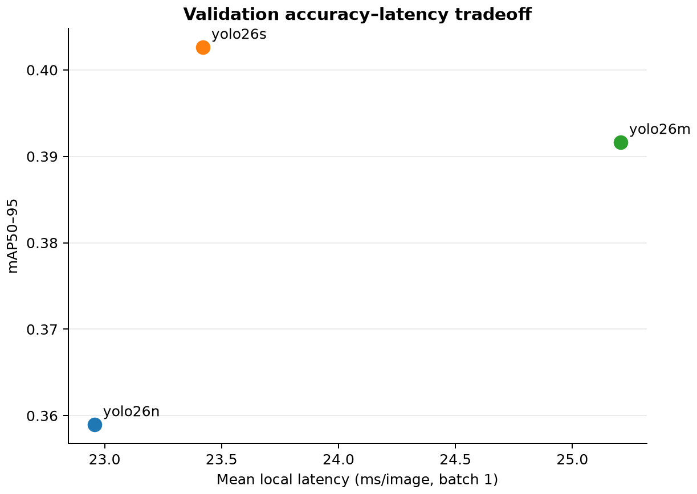

EcoCAR · Computer vision
How I chose a road-object detector for EcoCAR
I compared three YOLO models on a small, imbalanced road-scene dataset and selected the best accuracy-speed tradeoff without tuning on the test set.
For EcoCAR, I was not trying to pick the largest detector. I needed a model that could recognize road objects accurately while still responding quickly enough for a moving-vehicle setting. I compared three YOLO models under the same rules and made the final choice from validation data. The test set stayed untouched until the decision was frozen.
The data shaped the problem
The dataset had 860 road images, 3,418 labeled objects, and 14 classes. It was small and heavily imbalanced: Cars made up 62.3% of all labels, while the four rarest classes had only 27 examples combined. That mattered because a single aggregate score could look good while hiding weak coverage of rare road objects.
One pipeline, three candidates
I built one configurable pipeline instead of three separate training scripts. It audited the data, trained YOLO26n, YOLO26s, and YOLO26m, evaluated each best checkpoint on the same validation split, measured latency, and recorded the selection before testing the winner.
- Every candidate used the same 640-pixel input, batch size, data split, and matching rules.
- A YAML configuration and saved run records made each experiment reproducible.
- Class-aware, one-to-one matching measured correct detections rather than raw prediction counts.
What won
YOLO26s delivered the strongest validation result without a meaningful speed penalty.
| Model | Validation mAP50-95 | Local FPS |
|---|---|---|
| YOLO26n | 35.89% | 43.56 |
| YOLO26s | 40.26% | 42.70 |
| YOLO26m | 39.16% | 39.67 |

YOLO26s gained 4.37 percentage points of validation mAP50-95 over YOLO26n for only 0.46 ms more mean latency per image. It also outperformed YOLO26m by 1.10 points while running about 1.79 ms faster per image.
Tested once, after selection
After selecting YOLO26s, I evaluated it on 86 held-out test images. It reached 40.75% test mAP50-95, 72.40% precision, 80.30% recall, and a 76.15% F1 score. The test result was close to validation, but the small and imbalanced split is not enough to claim broad production generalization.
The 42.70 FPS figure measures model inference at batch size 1 with 640-pixel inputs. It does not include video decoding, rendering, tracking, or camera overhead.
What I learned
The largest model did not win. The more important outcome was a defensible selection process: inspect the dataset first, compare candidates under the same conditions, choose on validation data, and use the test set only after the choice is final.
The model was strongest on common classes such as Cars, Traffic-lights, and Traffic-signs. Person and MiniBus were weaker, and some rare classes had too little data to support strong conclusions. This is a measured baseline, not a production-ready perception system.
What I would do next
I would collect more rare-class examples, inspect Person and MiniBus failures, repeat training across multiple seeds or folds, and benchmark the full video path on the intended hardware. The next comparison should use the same controlled setup so the result remains meaningful.